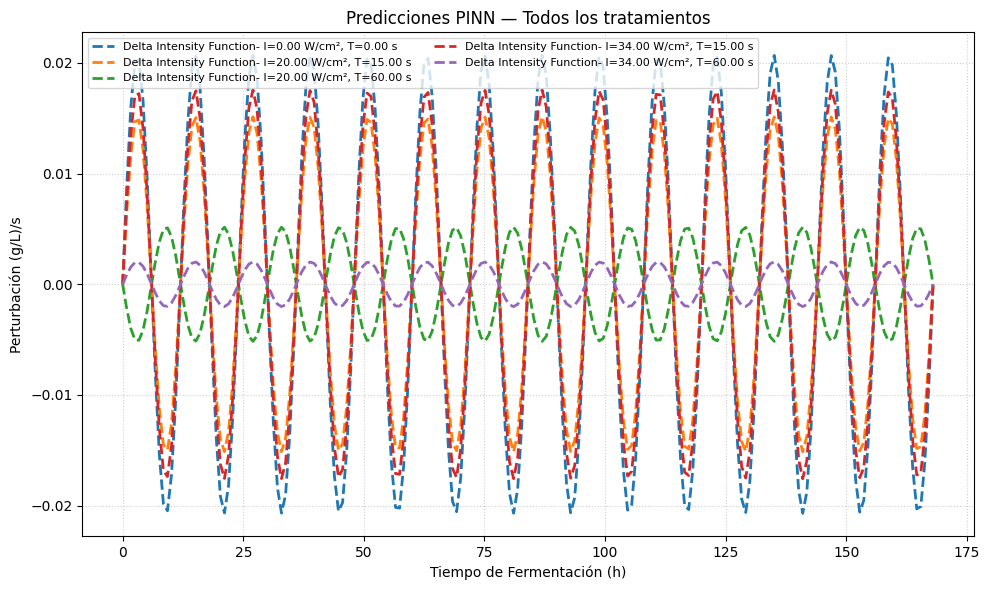
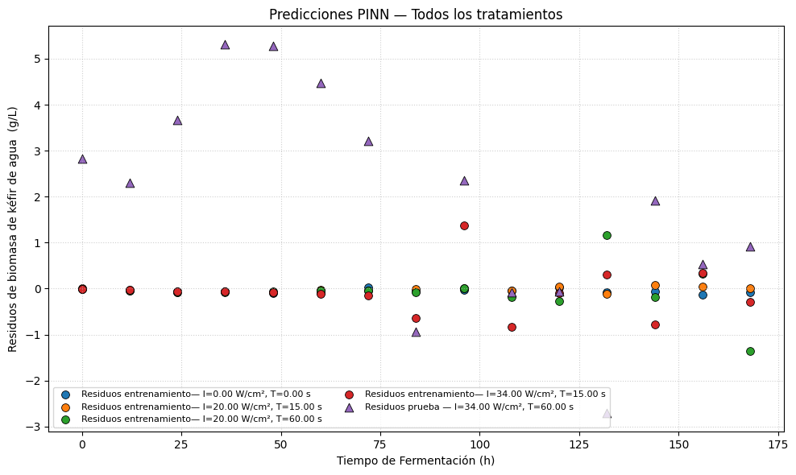

Ajuste de modelo con datos de tratamientos de ultrasonido#
En este trabajo se logró corroborar la validez de los parámetros del modelo de Gompertz para describir el crecimiento de los gránulos de kéfir de agua. Para ello, se empleó el método numérico de Runge–Kutta de cuarto orden (RK4), el cual permitió resolver la ecuación diferencial asociada al modelo de manera precisa y estable.
Los resultados obtenidos mediante RK4 mostraron una alta concordancia entre la solución numérica y los datos experimentales de crecimiento testigo de nuestra fuente de datos, lo que confirma que los parámetros estimados del modelo de Gompertz representan adecuadamente la dinámica del sistema biológico estudiado. Esta corroboración respalda el uso del modelo como una herramienta confiable para describir el comportamiento temporal del crecimiento de los gránulos.
Ajuste de PINN#
Adicionalmente, se logró ajustar una Red Neuronal Informada por la Física (Physics-Informed Neural Network, PINN) a los mismos datos experimentales de crecimiento, utilizando igualmente el modelo logístico como restricción física.
{kind=link}
{kind=link}
Parámetro |
Estimación |
Real |
Error absoluto |
Error relativo % |
|---|---|---|---|---|
r (1/hr) |
0.0491 |
0.046 |
0.0031 |
6.74 |
m (g/L) |
46.70 |
47.81 |
1.11 |
2.32 |
El PINN incorporó la ecuación diferencial del modelo dentro de su función de pérdida, permitiendo que la red aprendiera el comportamiento del sistema respetando las leyes que gobiernan su dinámica.
El ajuste mediante PINNs mostró desempeño consistente con el método numérico clásico, reproduciendo de forma adecuada la evolución del crecimiento de los gránulos de kéfir de agua. Estos resultados no ayudarán para la siguiente etapa del proyecto que consiste en resolver un problema inverso con los datos que tenemos a la mano.
Rendimiento de mejor modelo#
El mejor resultado del proceso de descubrimiento de física vino siendo producto del entrenamiento de PINN con la función de corrección de intensidad por periodos. Se puede visualizar el desempeño del modelo en la siguientes figuras:
{kind=link}
{kind=link}
En cuanto la función de corrección que se aprendió, se puede visualizar el efecto estimado que aplica a cada tratamiento de ultrasonido :
{kind=link}

Coeficiente |
Valor |
Unidades |
|---|---|---|
Independiente(c1) |
2.0700e-02 |
(g/cm3) |
Intensidad(c2) |
6.0500e-05 |
(g/cm3)/(W/cm2) |
Periodo de exposición(c3) |
-6.0200e-04 |
(g/cm3)/(s) |
Interacción(c4) |
7.5400e-06 |
(g/cm3)/(W/cm2)(s) |
En términos de ajuste, el coeficiente de determinación (\(R^2 = 0.8961\)) indica que el modelo explica una proporción considerable de la varianza observada en la concentración de biomasa, lo que sugiere una representación adecuada del fenómeno de fermentación bajo las condiciones experimentales consideradas. El error cuadrático medio (RMSE = 2.9640) y el error absoluto medio (MAE = 2.4397) muestran una desviación moderada respecto a los valores observados, mientras que el error porcentual absoluto medio (MAPE = 8.0278%) confirma que dicha desviación se mantiene dentro de un margen razonable en relación con la escala del problema [] (ver p. 40).
Treatment |
RMSE |
MAE |
MAPE |
R² |
AIC |
BIC |
|---|---|---|---|---|---|---|
Testigo (T1) Kéfir sin ultrasonicar |
4.214467 |
3.666482 |
9.483010 |
0.789970 |
10753.155692 |
14544.764519 |
15 seg. 20 W/cm² (T2) |
2.005311 |
1.716217 |
5.159485 |
0.952449 |
10730.873978 |
14522.482805 |
1 min. 20 W/cm² (T3) |
4.450155 |
3.878183 |
9.750573 |
0.765822 |
10754.788166 |
14546.396993 |
15 seg. 34 W/cm² (T4) |
4.517139 |
3.859970 |
9.680506 |
0.758720 |
10755.236363 |
14546.845190 |
1 min. 34 W/cm² (T5) |
2.964044 |
2.439785 |
8.027888 |
0.896112 |
10742.596637 |
14534.205464 |
Podemos comparar el rendimiento de un perceptron entrenado sin información física y el mejor PINN encontrado con el tratamiento T5, junto con las curvas predicción de cada tratamiento en las gráficas :
Modelo |
RMSE |
MAE |
MAPE |
(R^2) |
|---|---|---|---|---|
NN |
5.6739 |
4.8617 |
12.2258% |
0.6193 |
PINN |
2.9640 |
2.4397 |
8.0278% |
0.8961 |
Podemos ver que el PINN estima mejor el comportamiento del fenomeno estudiado, reflejado tanto en las métricas propuestas como en la visualización de las curvas de predicción.
Finalmente, observamos los residuos del PINN para cada tratamiento desplegados :
{kind=link}

Conclusiones#
Desde una perspectiva de interpretabilidad física, la superioridad del ajuste basado en intensidad por periodos resulta consistente con la naturaleza del proceso experimental. Este resultado es coherente con el diseño experimental, en el cual el sistema fue perturbado en intervalos de tiempo fijos, aplicando una intensidad y un periodo de exposición constantes en cada tratamiento. Al incorporar explícitamente esta interacción entre intensidad y periodo, el modelo refleja de manera más fiel el mecanismo mediante el cual la ultrasonicación afecta el crecimiento de los gránulos de kéfir, lo que explica su mejor desempeño frente a formulaciones alternativas.
Estos resultados no solo validan cuantitativamente el modelo propuesto, sino que también refuerzan la hipótesis de que la relación funcional entre intensidad y periodo de exposición constituye un factor determinante en la dinámica de fermentación observada, ofreciendo así una base sólida para la interpretación física del fenómeno estudiado.
Sin embargo, el presente estudio tiene algunas limitaciones. En primer lugar, el modelo fue ajustado y validado sobre un rango acotado de combinaciones de intensidad y periodo de exposición, por lo que su capacidad de extrapolación a condiciones experimentales fuera de este rango no ha sido evaluada. Asimismo, el tamaño de la muestra utilizada para el entrenamiento del modelo, si bien suficiente para obtener un ajuste estadísticamente aceptable, limita la robustez de las estimaciones de los coeficientes, particularmente en lo relativo a su significancia individual. Finalmente, aunque las métricas de error se encuentran dentro de umbrales razonables, no se descarta la posibilidad de cierto grado de sobreajuste dado el número de parámetros del modelo en relación con la cantidad de observaciones disponibles.
El modelo basado en la corrección de intensidad por periodos demostró ser la configuración con mejor desempeño para representar la dinámica de crecimiento de los gránulos de kéfir de agua bajo tratamiento de ultrasonido, con un ajuste estadísticamente sólido (\(R^2 = 0.8961\), MAPE = 8.03%) y una interpretación física coherente con el diseño experimental. Estos resultados confirman que la interacción entre intensidad y periodo de exposición es un factor determinante en la dinámica de fermentación observada.